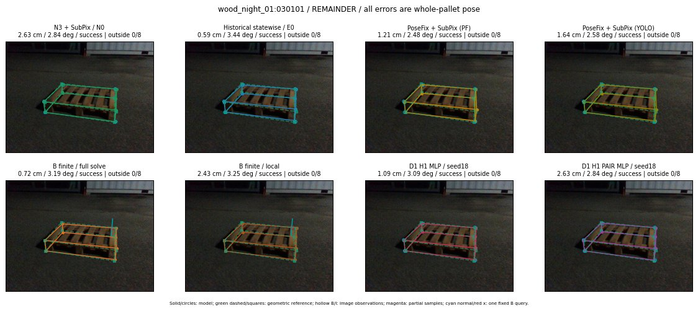

Whole-pallet pose errors; reference is a fixed geometric annotation, not certified physical GT.

Scores are uncalibrated logits. N0 retention is a numerical pose alias; it differs from H0 none or B fallback. B/I and profiles in baseline/B panels are original observations; L panels use new D1 observations. Only one deterministic supported B query is shown in a thumbnail; full support counts are below. Grey privacy rectangles edit the display copy only and are unrelated to O states; all observations were measured on original pixels. Thumbnails use JPEG quality85; detailed scientific panels are PNG.
| Method | Whole pose / cm, deg | Actual source | Selected ID | Score | Archived candidates | Eligible | N0 retained | H0 none | Fallback | Finite profiles |
|---|---|---|---|---|---|---|---|---|---|---|
| Raw YOLO + F | 5.29 cm / 3.18 deg / failure | OTHER | None | N/A | N/A | N/A | False | N/A | None | N/A |
| N3 + SubPix / N0 | 2.63 cm / 2.84 deg / success | N0 | None | N/A | N/A | N/A | True | N/A | None | N/A |
| Historical statewise / E0 | 0.59 cm / 3.44 deg / success | E0_REGENERATED | None | N/A | N/A | N/A | False | N/A | False | N/A |
| PoseFix raw | 2.19 cm / 2.70 deg / success | OTHER | None | N/A | N/A | N/A | False | N/A | None | N/A |
| PoseFix + SubPix (PF) | 1.21 cm / 2.48 deg / success | OTHER | None | N/A | N/A | N/A | False | N/A | False | historical support records 9; finite audit N/A |
| PoseFix + SubPix (YOLO) | 1.64 cm / 2.58 deg / success | OTHER | None | N/A | N/A | N/A | False | N/A | False | historical support records 9; finite audit N/A |
| Historical L, seed18 | 2.63 cm / 2.84 deg / success | N0 | N0 | N/A | 42 | 41 | True | True | True | N/A |
| Historical B fixed bank | 1.09 cm / 3.09 deg / success | OTHER | G10/ORIGINAL_WD/sample/1 | N/A | N/A | N/A | False | N/A | False | N/A |
| Historical B full | 0.68 cm / 3.25 deg / success | OTHER | NEW/B/ORIGINAL_WD/h0/G10/ORIGINAL_WD/sample/0/PROPOSED_NATIVE_YAW_0 | N/A | N/A | N/A | False | N/A | False | N/A |
| Historical edge full | 26.78 cm / 87.48 deg / failure | OTHER | NEW/edge/SWAPPED_WD/h0/G10/SWAPPED_WD/sample/0/PROPOSED_NATIVE_YAW_0 | N/A | N/A | N/A | False | N/A | False | N/A |
| Historical AB full | 0.68 cm / 3.25 deg / success | OTHER | NEW/AB/ORIGINAL_WD/h0/G10/ORIGINAL_WD/sample/0/PROPOSED_NATIVE_YAW_0 | N/A | N/A | N/A | False | N/A | False | N/A |
| B finite / fixed bank | 1.09 cm / 3.09 deg / success | OTHER | G10/ORIGINAL_WD/sample/1 | N/A | N/A | N/A | False | N/A | False | 32/32 |
| B finite / full solve | 0.72 cm / 3.19 deg / success | OTHER | NEW_FINITE/B/ORIGINAL_WD/h0/G10/ORIGINAL_WD/sample/0/PROPOSED_NATIVE_YAW_0 | N/A | N/A | N/A | False | N/A | False | 32/32 |
| B finite / local | 2.43 cm / 3.25 deg / success | OTHER | NEW_FINITE/B/ORIGINAL_WD/h0/N0_LOCAL_SAME_PHYSICAL_POSE/ORIGINAL_WD | N/A | N/A | N/A | False | N/A | False | 32/32 |
| Edge finite / full solve | 1.09 cm / 3.09 deg / success | OTHER | G10/ORIGINAL_WD/sample/1 | N/A | N/A | N/A | False | N/A | False | 32/32 |
| D0 H0 MLP / seed18 | 2.63 cm / 2.84 deg / success | N0 | N0 | 3.1281864643096924 | 15 | 14 | True | True | True | N/A |
| D0 H0 MLP / seed19 | 2.63 cm / 2.84 deg / success | N0 | N0 | 4.9661102294921875 | 15 | 14 | True | True | True | N/A |
| D0 H0 MLP / seed20 | 2.63 cm / 2.84 deg / success | N0 | N0 | 2.4703595638275146 | 15 | 14 | True | True | True | N/A |
| D0 H1 MLP / seed18 | 1.09 cm / 3.09 deg / success | OTHER | WD0/ORIGINAL_WD/selected | -1.3157280683517456 | 15 | 14 | False | False | False | N/A |
| D0 H1 MLP / seed19 | 1.09 cm / 3.09 deg / success | OTHER | WD0/ORIGINAL_WD/selected | -1.5875346660614014 | 15 | 14 | False | False | False | N/A |
| D0 H1 MLP / seed20 | 1.09 cm / 3.09 deg / success | OTHER | WD0/ORIGINAL_WD/selected | -1.9280513525009155 | 15 | 14 | False | False | False | N/A |
| D1 H0 MLP / seed18 | 2.63 cm / 2.84 deg / success | N0 | N0 | 7.807643890380859 | 15 | 14 | True | True | True | N/A |
| D1 H0 MLP / seed19 | 2.63 cm / 2.84 deg / success | N0 | N0 | 7.709540843963623 | 15 | 14 | True | True | True | N/A |
| D1 H0 MLP / seed20 | 2.63 cm / 2.84 deg / success | N0 | N0 | 7.336771488189697 | 15 | 14 | True | True | True | N/A |
| D1 H1 MLP / seed18 | 1.09 cm / 3.09 deg / success | OTHER | WD0/ORIGINAL_WD/selected | -0.17831647396087646 | 15 | 14 | False | False | False | N/A |
| D1 H1 MLP / seed19 | 1.09 cm / 3.09 deg / success | OTHER | WD0/ORIGINAL_WD/selected | -0.4372086524963379 | 15 | 14 | False | False | False | N/A |
| D1 H1 MLP / seed20 | 1.09 cm / 3.09 deg / success | OTHER | WD0/ORIGINAL_WD/selected | -1.1890008449554443 | 15 | 14 | False | False | False | N/A |
| D1 H1 ROLE AFFINE / seed18 | 1.09 cm / 3.09 deg / success | OTHER | WD0/ORIGINAL_WD/selected | 0.23986490070819855 | 15 | 14 | False | False | False | N/A |
| D1 H1 ROLE AFFINE / seed19 | 2.63 cm / 2.84 deg / success | N0 | N0 | 0.4780026376247406 | 15 | 14 | True | False | False | N/A |
| D1 H1 ROLE AFFINE / seed20 | 1.09 cm / 3.09 deg / success | OTHER | WD0/ORIGINAL_WD/selected | 0.3620285391807556 | 15 | 14 | False | False | False | N/A |
| D1 H1 PAIR MLP / seed18 | 2.63 cm / 2.84 deg / success | N0 | N0 | -0.9726359844207764 | 15 | 2 | True | False | False | N/A |
| D1 H1 PAIR MLP / seed19 | 2.63 cm / 2.84 deg / success | N0 | N0 | -1.3170534372329712 | 15 | 2 | True | False | False | N/A |
| D1 H1 PAIR MLP / seed20 | 2.63 cm / 2.84 deg / success | N0 | N0 | -1.7537192106246948 | 15 | 2 | True | False | False | N/A |
| D1 H1 PAIR ROLE AFFINE / seed18 | 2.63 cm / 2.84 deg / success | N0 | N0 | -0.5665802359580994 | 15 | 2 | True | False | False | N/A |
| D1 H1 PAIR ROLE AFFINE / seed19 | 0.59 cm / 3.44 deg / success | E0_REGENERATED | E0_REGENERATED | -0.7384199500083923 | 15 | 2 | False | False | False | N/A |
| D1 H1 PAIR ROLE AFFINE / seed20 | 2.63 cm / 2.84 deg / success | N0 | N0 | -0.4562956392765045 | 15 | 2 | True | False | False | N/A |
| Regenerated common E0 | 0.59 cm / 3.44 deg / success | E0_REGENERATED | E0_REGENERATED | N/A | N/A | N/A | False | N/A | False | N/A |